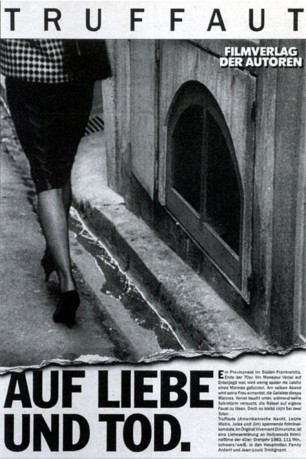

#8029 Auf Liebe und Tod
Alternativ: Confidentially Yours (Englischer Titel)
 
 IMDB-Wertung: 7.4 / 10
IMDB-Wertung: 7.4 / 10  Metascore: 0
Metascore: 0 
Die hübsche Sekretärin Barbara schmeißt des öfteren das Immobilienbüro allein, wenn ihr Chef, Julien Vercel, mal wieder lieber auf Entenjagd ist. Nur zu dumm, dass erst der Geliebte von Juliens Frau und dann die Gattin selbst tot aufgefunden werden. Weil Barbara aber an Juliens Unschuld glaubt, nimmt sie beherzt die Ermittlungen selbst in die Hand.
Jahr: 1983
Dauer: 111 Minuten
FSK: 16
Land: Frankreich Studio: Concorde Home EntertainmentTonspuren:
Untertitel: Deutsch,
Auflösung: 1080p (1808x1080) Größe: 6717 MB
Genre: Thriller, Komödie, Krimi, Mystery
Regisseur: François Truffaut
Drehbuch: Charles Williams
Soundtrack: Georges Delerue
Darsteller:
 Fanny Ardant als Barbara Becker
Fanny Ardant als Barbara Becker Jean-Louis Trintignant als Julien Vercel
Jean-Louis Trintignant als Julien Vercel Philippe Laudenbach als Maitre Clement
Philippe Laudenbach als Maitre Clement- Isabel Benet als Clement's secretary (uncredited)
- Jean-Pierre Kalfon als Massoulier (the priest)
- Philippe Morier-Genoud als Supt. Santelli
- Xavier Saint-Macary als Bertrand Fabre
- Jean-Louis Richard als Louison
- Caroline Silhol als Marie-Christine Vercel
- Castel Casti als
- Anik Belaubre als Paule Delbecq
- Yann Dedet als Angel Face
- Nicole Félix als The scarfaced whore
- Georges Koulouris als Lablache
- Pascale Pellegrin als Secretarial candidate
- Roland Thénot als Jambreau
- Michel Aubossu als
- Pauline Aubret als
- Isabelle Binet als
- Dany Castaing als
- Alain Gambin als Theater director
- Pierre Gare als Insp. Poivert
- Michel Grisoni als
- Marie-Noëlle Guilliot als
- Jean-Pierre Kohut-Svelko als Rowdy Slav
- Pierrette Monticelli als
- Adrien Silvio als
- Paul Steiger als
- Christine Verbèke als
- Jacques Vidal als The King
- Josiane Couëdel als Clement's secretary (uncredited)
- Michel Grisolia als (uncredited)
- Hilton McConnico als Prostitute's client (uncredited)
- Thi-Loan Nguyen als Chinese woman (uncredited)
- Eva Truffaut als Secretary (uncredited)
Datei: X:\1983\Auf Liebe und Tod (1983, FSK16, 1808x1080).mkv seit 18.01.2018
Festplatte: HD 1980-1986
 Es gibt insgesamt 35 Filme in der Gruppe '1983'
Es gibt insgesamt 35 Filme in der Gruppe '1983'